2 Align associated subplots
With xlim2() and ylim2(), it is easy to align associated subplots to annotate a main figure. The aplot package provides insert_left(), insert_right(), insert_top() and insert_bottom() as shortcut to help users aligning subplots.
2.1 A first glance
library(ggplot2)
library(aplot)
p <- ggplot(mtcars, aes(mpg, disp)) + geom_point()
p2 <- ggplot(mtcars, aes(mpg)) +
geom_density(fill='steelblue', alpha=.5) +
ggtree::theme_dendrogram()
p3 <- ggplot(mtcars, aes(x=1, y=disp)) +
geom_boxplot(fill='firebrick', alpha=.5) +
theme_void()
ap <- p %>%
insert_top(p2, height=.3) %>%
insert_right(p3, width=.1)
## you can use `ggsave(filename="aplot.png", plot=ap)` to export the plot to image file
print(ap) # or just type ap will print the figure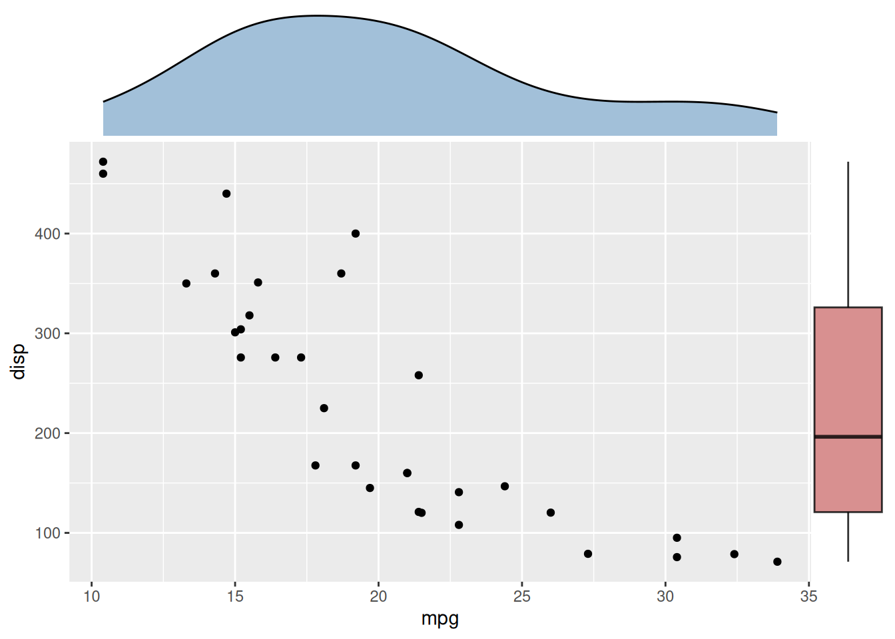
2.2 Placing collected guides
When associated plots are inserted around a main plot, the resulting layout is often no longer a simple rectangle of occupied panels. For example, inserting one plot on the top and another plot on the right leaves an empty region in the top-right corner. This empty region is not another data panel, but it is still part of the composite layout. It is a natural place to put the collected guides.
The set_guide_area() function marks such a region as the destination for collected guides. It only controls where the guides are placed. Corner positions such as "top-right", "top-left", "bottom-right", and "bottom-left" refer to the continuous empty region anchored at that corner. Side positions such as "right", "left", "top", and "bottom" reserve a guide region along the corresponding edge. In both cases, the guide is treated as one collected object and placed into the selected region.
The following example inserts a plot above the main panel and another plot to the right. The top-right corner is empty, so set_guide_area("top-right") uses that corner region for the collected guides.
p_main_guide <- ggplot(mtcars, aes(mpg, disp, colour = factor(cyl))) +
geom_point(size = 2)
p_top_guide <- ggplot(mtcars, aes(mpg, wt, shape = factor(am))) +
geom_point(size = 2.2)
p_right_guide <- ggplot(mtcars, aes(x = factor(gear), y = disp, fill = factor(gear))) +
geom_boxplot(width = 0.6, alpha = 0.8)
p_main_guide %>%
insert_top(p_top_guide, height = 0.3) %>%
insert_right(p_right_guide, width = 0.25) %>%
set_guide_area("top-right")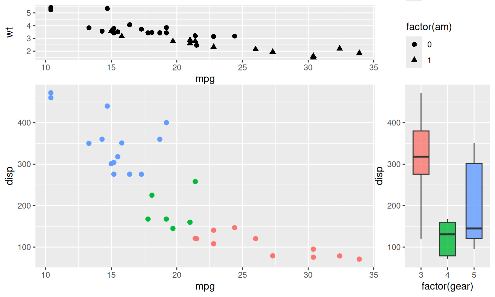
Guide placement and guide layout are intentionally separated. The guide area only determines where the collected guides are placed; it does not decide how large each legend key should be, how many columns a legend should use, or how multiple guide boxes should be wrapped. These layout decisions are handled by set_guide_layout().
There are two levels of guide layout. Arguments starting with legend_* act inside each individual guide box. For example, legend_title_position = "top" places each guide title above its keys. Arguments starting with guides_* act on the group of collected guide boxes. For example, guides_ncol = 2 arranges multiple collected guide boxes into two columns. This distinction matters: if the plot only produces one guide box, guides_ncol will have little visible effect. It is useful when several aesthetics produce separate guide boxes after guide collection.
The next example maps different aesthetics in the main, top, and right panels. After guide collection, these separate guide boxes can be wrapped as a compact group inside the top-right guide area.
p_main_guides <- ggplot(mtcars, aes(mpg, disp, colour = factor(cyl))) +
geom_point(size = 2)
p_top_guides <- ggplot(mtcars, aes(mpg, wt, shape = factor(am))) +
geom_point(size = 2.2)
p_right_guides <- ggplot(mtcars, aes(x = factor(gear), y = disp, fill = factor(gear))) +
geom_boxplot(width = 0.6, alpha = 0.8)
p_main_guides %>%
insert_top(p_top_guides, height = 0.3) %>%
insert_right(p_right_guides, width = 0.25) %>%
set_guide_area("top-right") %>%
set_guide_layout(
legend_title_position = "top",
guides_ncol = 2,
guides_direction = "horizontal"
)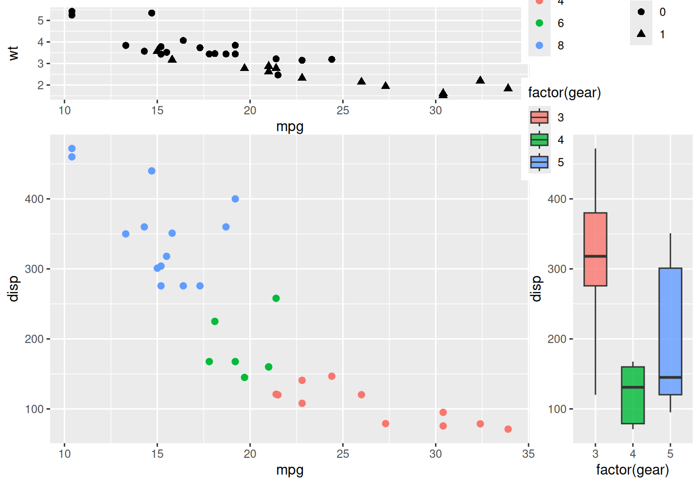
2.3 Aligning plots with a tree
Aligning a plot with a tree is difficult, as it requres expertise to extract the order of taxa on the tree.
library(ggtree)
set.seed(2020-03-27)
x <- rtree(10)
d <- data.frame(taxa=x$tip.label, value = abs(rnorm(10)))
p <- ggtree(x) + geom_tiplab(align = TRUE) + xlim(NA, 3)
p2 <- ggplot(d, aes(value, taxa)) + geom_col() +
scale_x_continuous(expand=c(0,0))
library(patchwork)
p | p2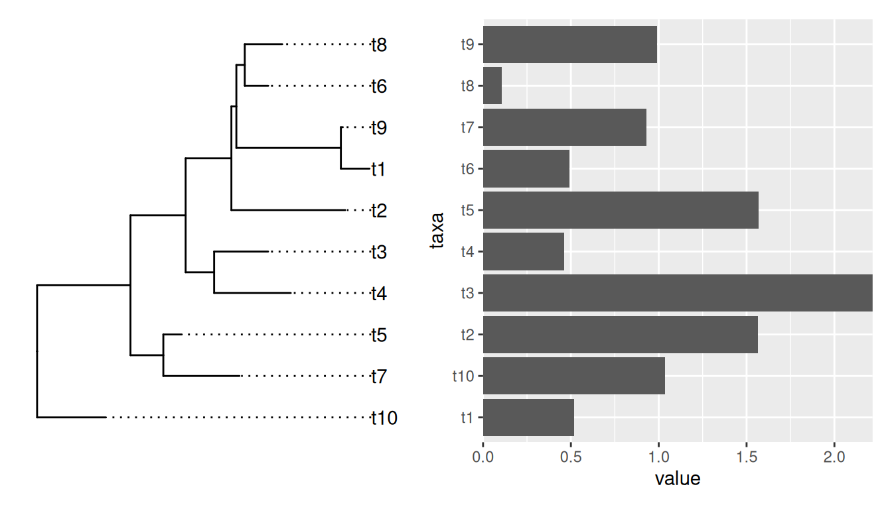
Althought patchwork did a good job at aligning y-axes among the two plots, the output is not what we want if the bar heights are associated with external nodes on the tree. It is not so obvious for an ordinary user to extract the order of tip label from the tree to re-draw the barplot.
If we insert a ggtree object in aplot, it will transform other plots in the same row (insert_left and insert_right) or same column (insert_top and insert_bottom) based on the tree structure.
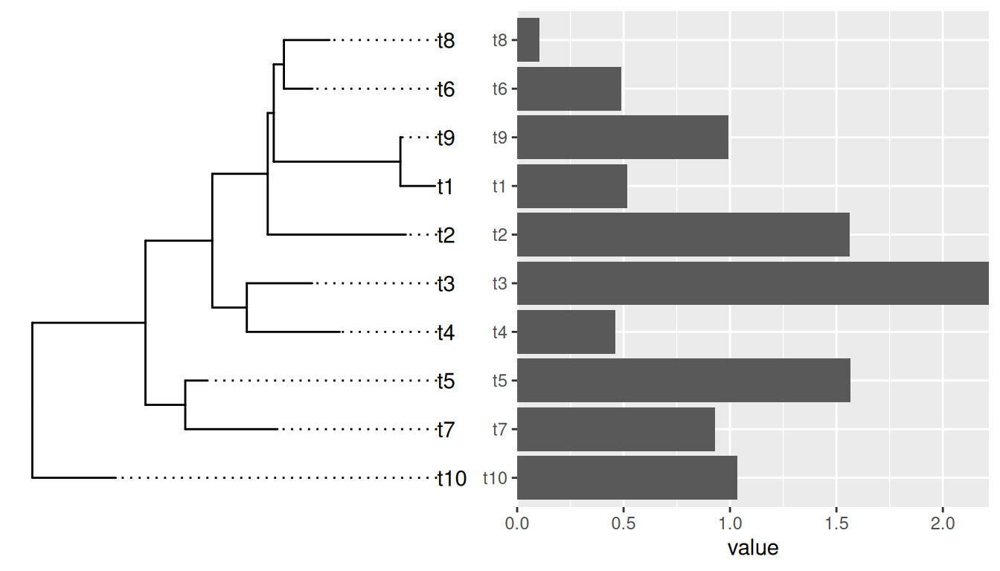
2.3.1 Using the tree as the main plot
In practice, users often start from the tree and then add associated metadata to the right-hand side. That sounds natural, but it is also where people often trip over the width semantics: the width argument always describes the inserted plot relative to the main plot, not the other way around. So if the tree is the visual anchor and the metadata panel should be narrower, the most reliable way to express that layout is still to start from the metadata plot and insert the tree on the left. That keeps the relative width easy to reason about and avoids guessing which side is being treated as the reference panel. The following code produces a layout in which the metadata panel is half of the tree width.
tree_main <- ggtree(x) + geom_tiplab(align = TRUE) + xlim(NA, 3)
metadata_main <- ggplot(d, aes(value, taxa)) +
geom_col() +
scale_x_continuous(expand = c(0, 0)) +
theme_minimal() +
xlab(NULL) +
ylab(NULL)
metadata_main %>% insert_left(tree_main, width = 2)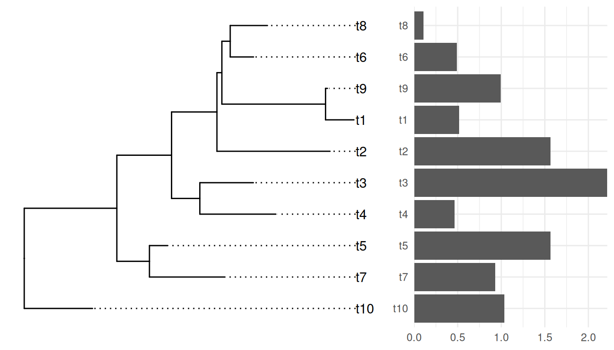
2.3.2 Controlling panel spacing
The set_panel_spacing() function controls the gap between aligned panels in an aplot object. This is useful when the panels already line up but still look visually crowded or uneven. Numeric values are interpreted in millimeters and refer to the spacing between neighboring panels.
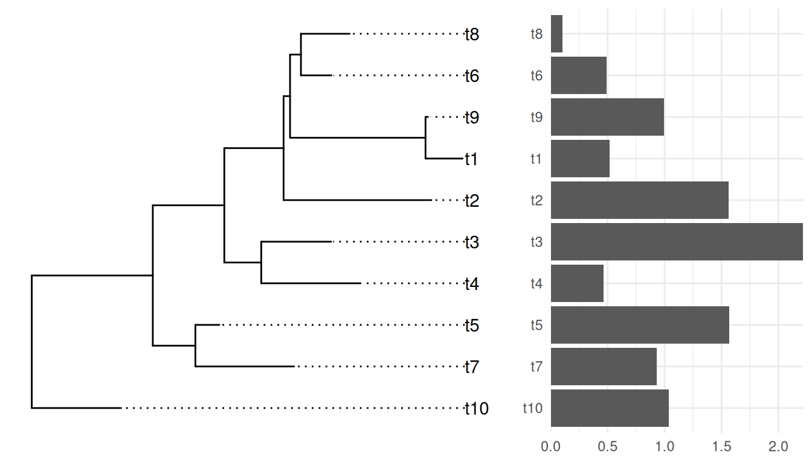
If the individual ggplot objects already define their own plot.margin, you can preserve these margins by setting the spacing mode to "asis". In that mode, aplot keeps the plot margins you already set instead of replacing them with a uniform spacing value.
tree_main_pad <- tree_main +
theme(plot.margin = ggplot2::margin(5.5, 12, 5.5, 5.5))
metadata_main_pad <- metadata_main +
theme(plot.margin = ggplot2::margin(5.5, 5.5, 5.5, 12))
metadata_main_pad %>%
insert_left(tree_main_pad, width = 2) %>%
set_panel_spacing("asis")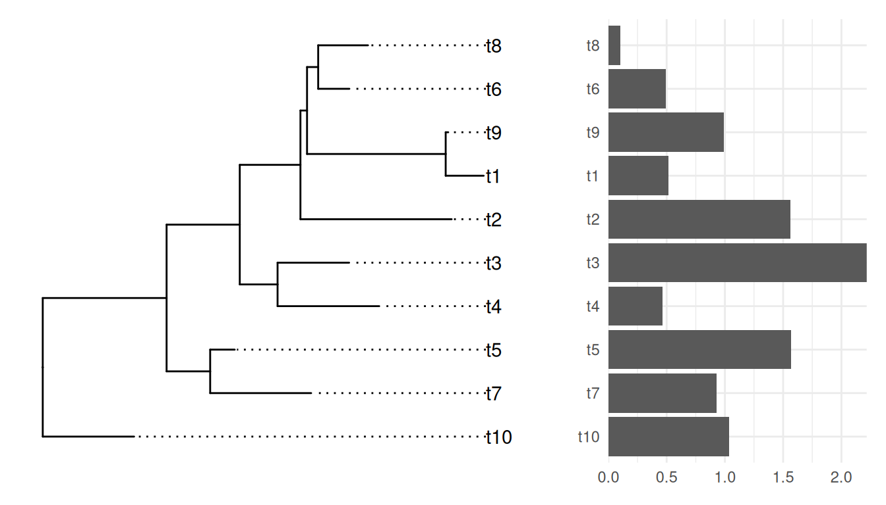
Example from https://github.com/YuLab-SMU/ggtree/issues/339.
require(ggtree)
require(ggplot2)
require(dplyr)
require(gggenes)
tree <- read.tree("data/nbh.nwk")
nbh <- read.csv("data/nbh.csv")
tree_plot <- ggtree(tree) +
geom_tiplab(aes(label=label))
nbh_plot <- ggplot(
(nbh %>% select(label, block_id,pid,start,end,strand) %>% distinct()),
aes(xmin = start, xmax = end, y = block_id, forward = strand) # as_factor(block_id)
) +
geom_gene_arrow() +
#scale_fill_brewer(palette = "Set3") +
theme_genes() %+replace%
theme(panel.grid.major.y = element_line(colour = NULL)) + # , linetype = "dotted")) +
#theme_classic() +
theme(
axis.title.x=element_blank(),
#axis.text.x=element_blank(),
axis.ticks.x=element_blank(),
#axis.line.x = element_blank(),
axis.title.y=element_blank(),
#axis.text.y=element_blank(),
axis.ticks.y=element_blank(),
axis.line.y = element_blank()
)
require(aplot)
insert_left(nbh_plot, tree_plot)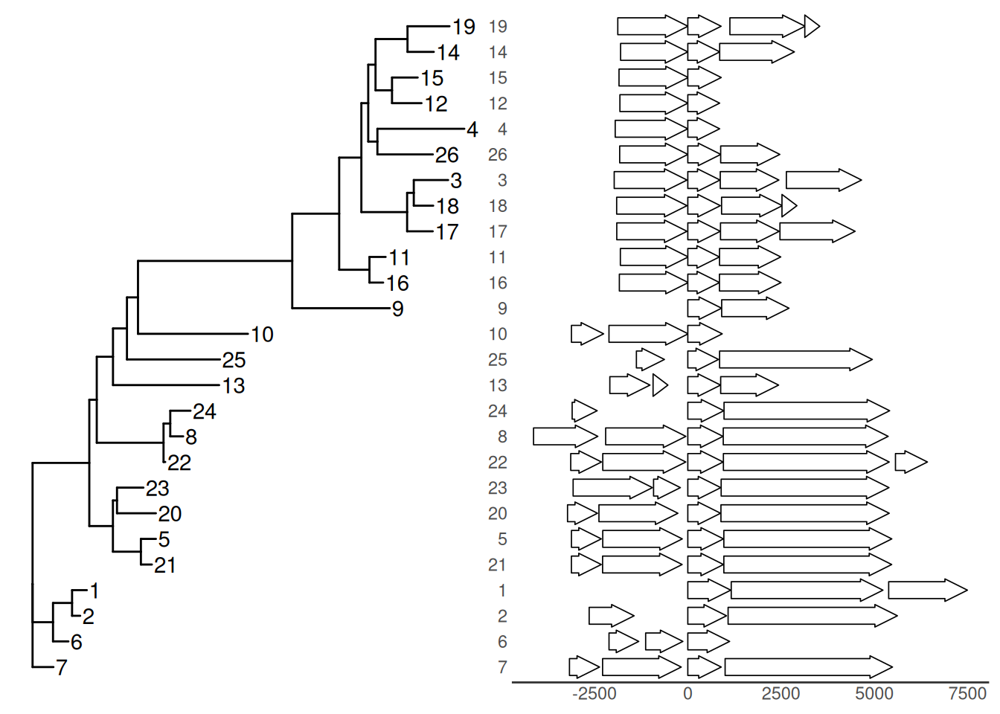
Example from https://github.com/YuLab-SMU/ggtree/issues/313.
set.seed(20200618)
## Create a random tree
tre <- rtree(10)
tre$tip.label <- letters[1:10]
## Build matrix with some random numbers in long format so can be plotted as "heatmap" using geom_tile
gmat <- expand.grid(x = letters[1:10], y = letters[1:10])
gmat$v <- rexp(100, rate=.1)
## Generate some reandom numbres for a line plot
gline <- tibble(x = letters[1:10], y = rnorm(10, 10, 2))
## Generate some random percentages for a bar plot
gbar <- tibble(x = letters[1:10], y = round(runif(10) * 100,1))
## Construct ggtree
ptre <- ggtree(tre) + geom_tiplab() +
geom_nodepoint(colour = 'firebrick', size=3)
## Constuct companion plots
pmat <- ggplot(gmat, aes(x,y, fill=v)) + geom_tile()
pbar <- ggplot(gbar, aes(x,y)) + geom_col() + coord_flip() + ylab(NULL)
pline <- ggplot(gline, aes(x,y)) +
geom_line(aes(group = 1)) + geom_point() + coord_flip()
cowplot::plot_grid(ptre, pmat, pbar, pline, ncol=4)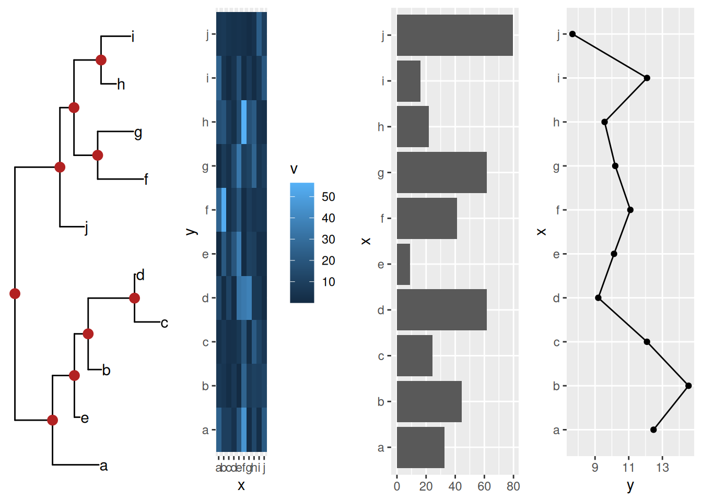
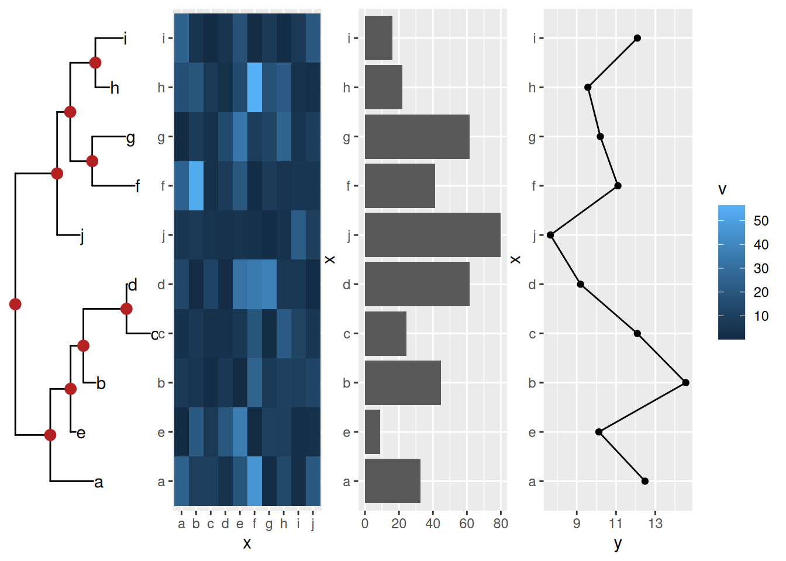
2.4 Creating annotated heatmap
The xlim2() and ylim2() functions create many possibilities to align figures. For instance, we can add column and row annotations around a heatmap in all sides (top, bottom, left and right). They can be aligned properly with the aids of xlim2() and ylim2() even with missing values presented as demonstrated in Figure 2.1.
library(tidyr)
library(ggplot2)
library(ggtree)
set.seed(2019-11-07)
d <- matrix(rnorm(25), ncol=5)
rownames(d) <- paste0('g', 1:5)
colnames(d) <- paste0('t', 1:5)
hc <- hclust(dist(d))
hcc <- hclust(dist(t(d)))
phr <- ggtree(hc)
phc <- ggtree(hcc) + layout_dendrogram()
d <- data.frame(d)
d$gene <- rownames(d)
dd <- gather(d, 1:5, key="condition", value='expr')
p <- ggplot(dd, aes(condition,gene, fill=expr)) + geom_tile() +
scale_fill_viridis_c() +
scale_y_discrete(position="right") +
theme_minimal() +
xlab(NULL) + ylab(NULL)
g <- ggplot(dplyr::filter(dd, gene != 'g2'), aes(gene, expr, fill=gene)) +
geom_boxplot() + coord_flip() +
scale_fill_brewer(palette = 'Set1') +
theme_minimal() +
theme(axis.text.y = element_blank(),
axis.ticks.y = element_blank(),
panel.grid.minor = element_blank(),
panel.grid.major.y = element_blank()) +
xlab(NULL) + ylab(NULL)
ca <- data.frame(condition = paste0('t', 1:5),
A1 = rep(LETTERS[1:2], times=c(3, 2)),
A2 = rep(letters[3:5], times=c(1, 3, 1))
)
cad <- gather(ca, A1, A2, key='anno', value='type')
pc <- ggplot(cad, aes(condition, y=anno, fill=type)) + geom_tile() +
scale_y_discrete(position="right") +
theme_minimal() +
theme(axis.text.x = element_blank(),
axis.ticks.x = element_blank()) +
xlab(NULL) + ylab(NULL)
set.seed(123)
dp <- data.frame(gene=factor(rep(paste0('g', 1:5), 2)),
pathway = sample(paste0('pathway', 1:5), 10, replace = TRUE))
pp <- ggplot(dp, aes(pathway, gene)) +
geom_point(size=5, color='steelblue') +
theme_minimal() +
theme(axis.text.x=element_text(angle=90, hjust=0),
axis.text.y = element_blank(),
axis.ticks.y = element_blank()) +
xlab(NULL) + ylab(NULL)
p %>% insert_left(phr, width=.3) %>%
insert_right(pp, width=.4) %>%
insert_right(g, width=.4) %>%
insert_top(pc, height=.1) %>%
insert_top(phc, height=.2)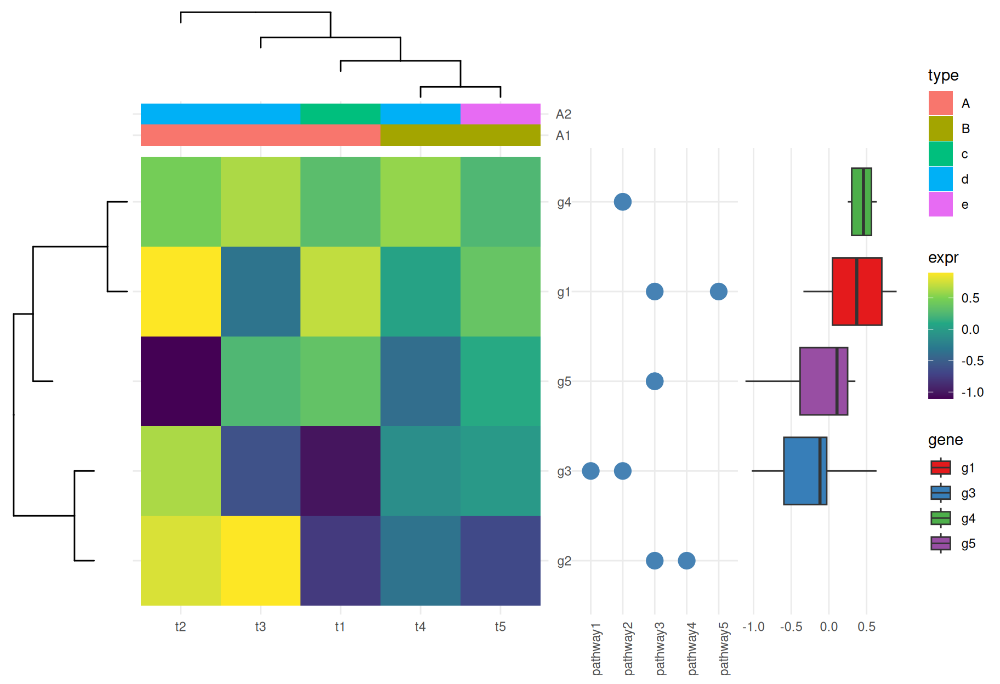
Figure 2.1: Create complex heatmap. With the helps of xlim2() and ylim2(), it is easy to align row or column annotations around a figure (e.g. a heatmap).
2.5 A single cell example
Example taken from https://davemcg.github.io/post/lets-plot-scrna-dotplots/
library(readr)
library(tidyr)
library(dplyr)
library(ggplot2)
library(ggtree)
file <- system.file("extdata", "scRNA_dotplot_data.tsv.gz", package="aplot")
gene_cluster <- readr::read_tsv(file)
dot_plot <- gene_cluster %>%
mutate(`% Expressing` = (cell_exp_ct/cell_ct) * 100) %>%
filter(count > 0, `% Expressing` > 1) %>%
ggplot(aes(x=cluster, y = Gene, color = count, size = `% Expressing`)) +
geom_point() +
cowplot::theme_cowplot() +
theme(axis.line = element_blank()) +
theme(axis.text.x = element_text(angle = 90, vjust = 0.5, hjust=1)) +
ylab(NULL) +
theme(axis.ticks = element_blank()) +
scale_color_gradientn(colours = viridis::viridis(20), limits = c(0,4), oob = scales::squish, name = 'log2 (count + 1)') +
scale_y_discrete(position = "right")
mat <- gene_cluster %>%
select(-cell_ct, -cell_exp_ct, -Group) %>% # drop unused columns to faciliate widening
pivot_wider(names_from = cluster, values_from = count) %>%
data.frame() # make df as tibbles -> matrix annoying
row.names(mat) <- mat$Gene # put gene in `row`
mat <- mat[,-1] #drop gene column as now in rows
clust <- hclust(dist(mat %>% as.matrix())) # hclust with distance matrix
ggtree_plot <- ggtree::ggtree(clust)
v_clust <- hclust(dist(mat %>% as.matrix() %>% t()))
ggtree_plot_col <- ggtree(v_clust) + layout_dendrogram()
labels= ggplot(gene_cluster, aes(cluster, y=1, fill=Group)) + geom_tile() +
scale_fill_brewer(palette = 'Set1',name="Cell Type") +
theme_void()
library(patchwork)
ggtree_plot | dot_plot | (ggtree_plot_col / labels)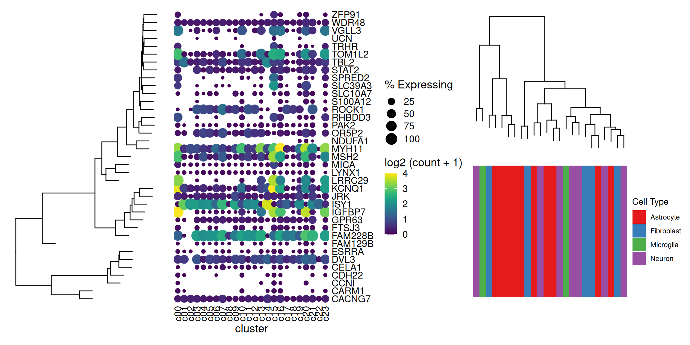
library(aplot)
## the rows of the dot_plot was automatically reorder based on the tree
dot_plot %>%
insert_left(ggtree_plot, width=.2) 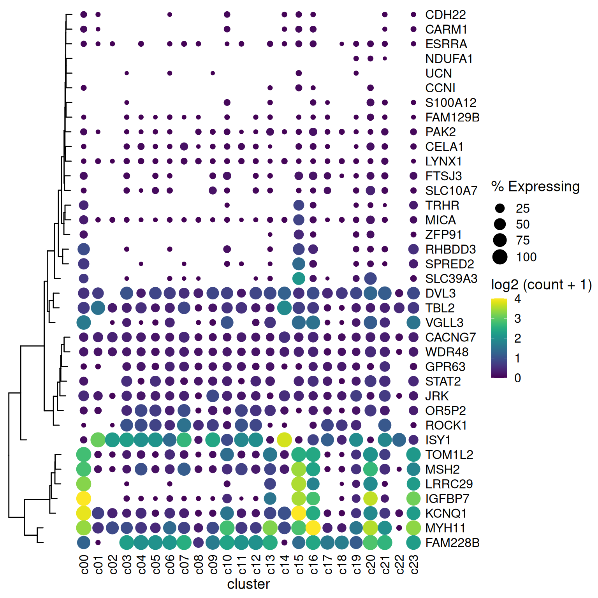
## the columns of the dot_plot was automatically reorder based on the tree
dot_plot %>%
insert_left(ggtree_plot, width=.2) %>%
insert_top(labels, height=.02) %>%
insert_top(ggtree_plot_col, height=.1)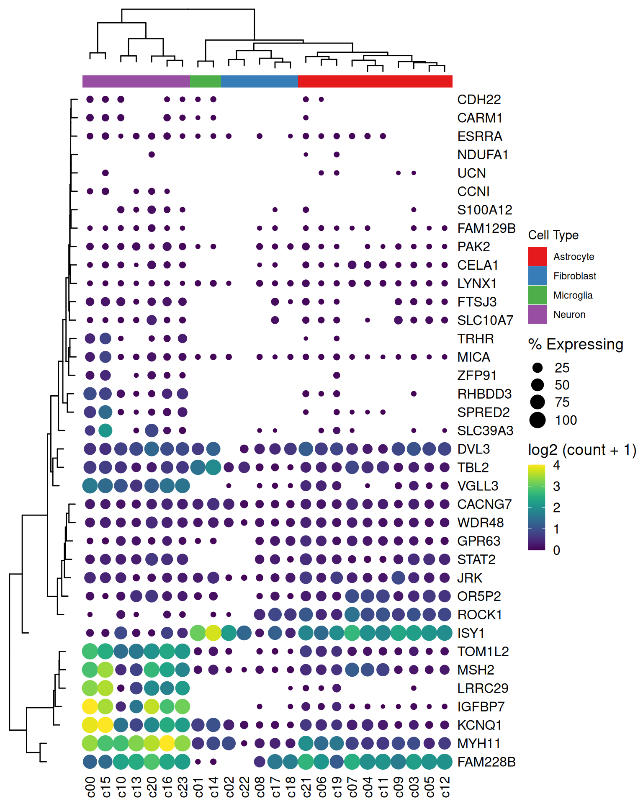